01 · 통증 완화
침 · 약침
뭉친 근육과 통증 부위를 직접 풀어 줍니다
아픈 부위와 관련된 혈자리에 침을 놓아 긴장된 근육을 풀고 통증을 줄입니다. 약침은 한약재에서 얻은 약침액을 통증 부위에 소량 주입해, 침의 자극과 약재의 작용을 함께 전합니다.
이런 증상에 · 목·허리 통증, 근육 뭉침, 관절 통증, 두통
홈 > 교통사고 > 치료 방법
증상에 맞춰 네 가지 한방 치료를 함께 씁니다
TREATMENT
한 가지 치료만으로 모든 증상을 다스리기는 어렵습니다. 근육과 관절, 몸 안의 순환과 마음까지 살펴 네 가지 치료를 상태에 맞게 조합합니다.
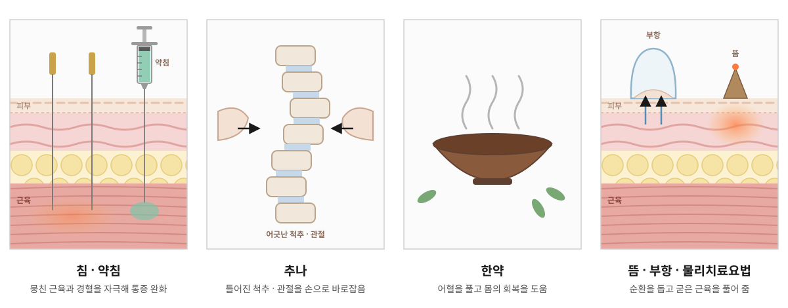
01 · 통증 완화
뭉친 근육과 통증 부위를 직접 풀어 줍니다
아픈 부위와 관련된 혈자리에 침을 놓아 긴장된 근육을 풀고 통증을 줄입니다. 약침은 한약재에서 얻은 약침액을 통증 부위에 소량 주입해, 침의 자극과 약재의 작용을 함께 전합니다.
이런 증상에 · 목·허리 통증, 근육 뭉침, 관절 통증, 두통
02 · 균형 회복
틀어진 척추와 관절을 바로잡습니다
한의사가 손으로 척추와 관절, 근육을 밀고 당겨 사고 충격으로 틀어진 몸의 균형을 바로잡습니다. 굳은 관절이 다시 부드럽게 움직이도록 돕고 근육과 인대의 긴장을 풀어 줍니다.
이런 증상에 · 목·허리가 뻣뻣해 잘 돌아가지 않을 때, 몸이 틀어진 느낌
03 · 몸 안쪽 회복
어혈을 풀고 몸의 회복을 돕습니다
사고로 생긴 어혈을 풀고 손상된 근육과 인대가 회복되도록 돕습니다. 놀란 마음과 불면, 소화불량처럼 몸 안에 나타난 증상도 체질과 상태에 맞춰 함께 살핍니다.
이런 증상에 · 온몸이 무겁고 쑤실 때, 메스꺼움·소화불량, 놀람·불안·불면
04 · 순환 · 이완
순환을 돕고 굳은 근육을 풀어 줍니다
핫팩과 공기압 다리마사지로 몸을 먼저 따뜻하게 풀고, ICT로 깊은 곳의 근육을 자극합니다. 뜸은 침과 함께 따뜻한 자극으로 굳은 부위를 부드럽게 하고, 부항은 피부를 가볍게 당겨 뭉친 근육과 막힌 순환을 풀어 줍니다.
이런 증상에 · 근육 뭉침·결림, 몸이 무겁고 순환이 안 되는 느낌
PHYSICAL THERAPY
핫팩과 공기압 다리마사지, ICT로 몸을 먼저 풀어 준 뒤 침·약침과 추나를 진행합니다. 그 밖의 장비는 증상과 그날의 상태에 맞춰 사용합니다.
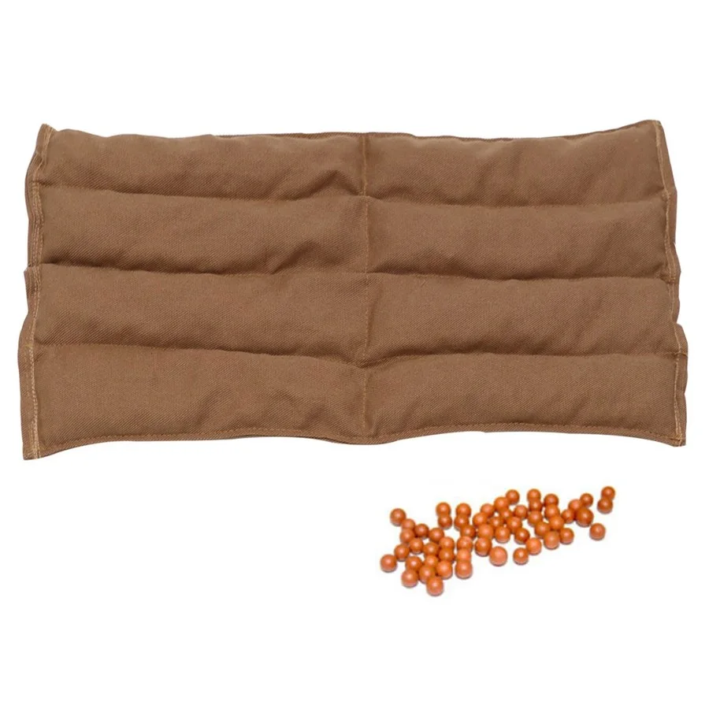
온열 · 기본 치료
따뜻한 찜질로 굳은 근육을 부드럽게 하고 순환을 돕습니다. 치료를 시작할 때 몸을 먼저 풀어 줍니다.
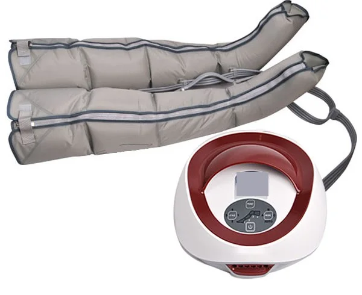
마사지 · 기본 치료
다리를 감싼 커프에 공기를 넣었다 빼며 차례로 눌러 주어, 다리의 순환을 돕고 뭉친 피로를 풀어 줍니다.
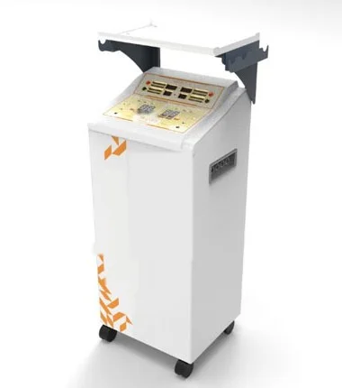
전기 자극 · 기본 치료
두 가지 전류가 몸속에서 겹치도록 해 깊은 곳의 근육까지 자극하고, 통증과 근육 긴장을 줄이는 데 도움을 줍니다.
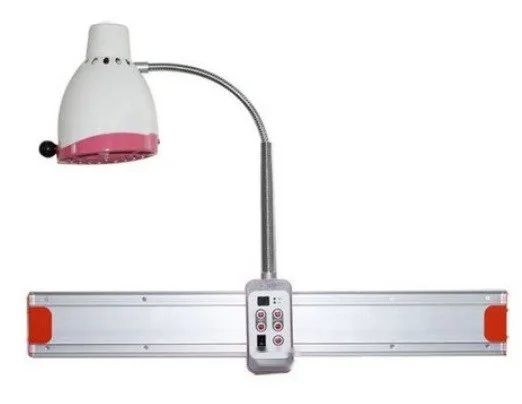
온열
적외선의 열로 아픈 부위를 깊이 데워 근육을 이완하고 순환을 돕습니다.
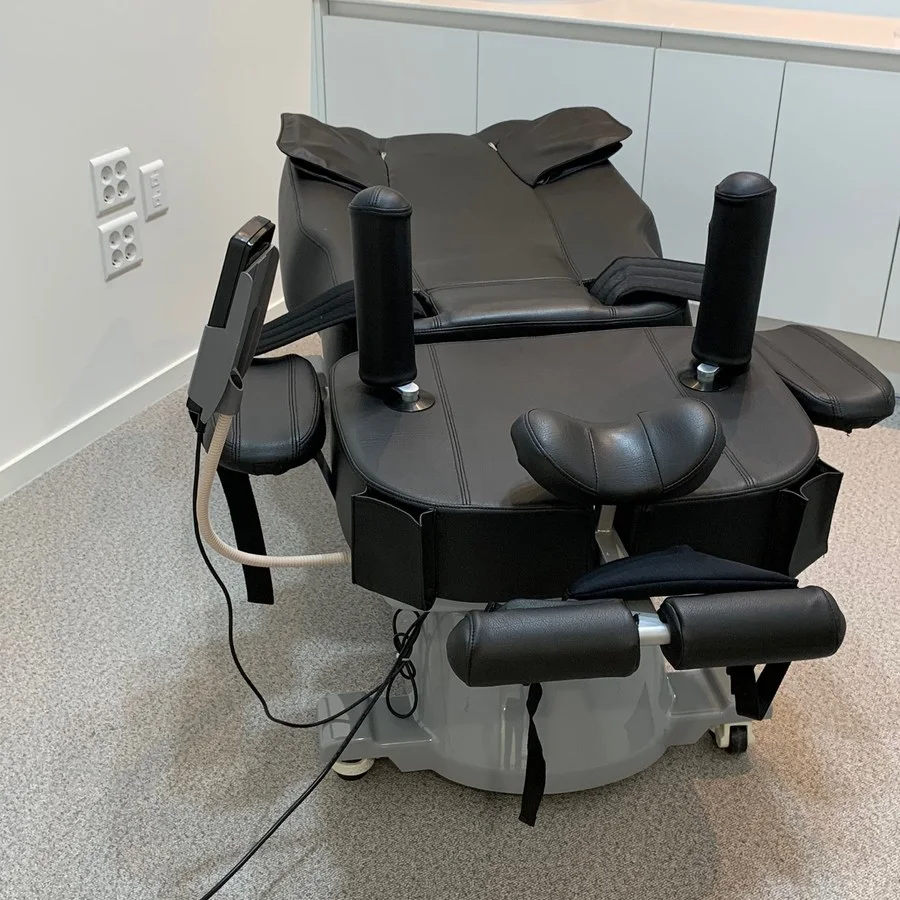
견인
목이나 허리를 천천히 당겨 척추 사이의 압박을 줄이고 주변 근육의 긴장을 풀어 줍니다.
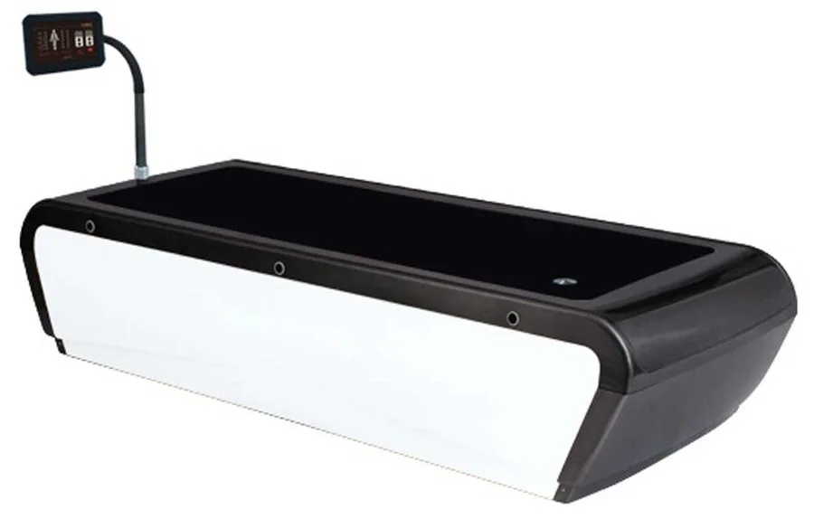
마사지
물의 압력(수압)을 이용해 누운 채로 등과 온몸을 부드럽게 마사지합니다.
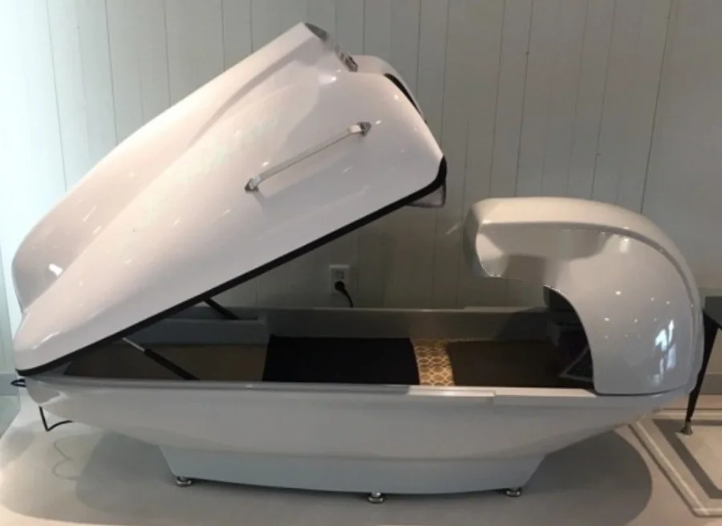
온열 · 마사지
원적외선 온열과 진동·안마, 자동 스트레칭 기능을 함께 갖춘 베드입니다. 누운 채로 몸을 따뜻하게 데우고 굳은 근육을 풀어 순환을 돕습니다.
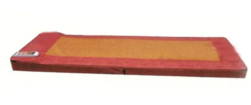
마사지
누운 채로 등 아래에서 두드려 주는 자극과 온열로 뭉친 근육을 풀어 줍니다.
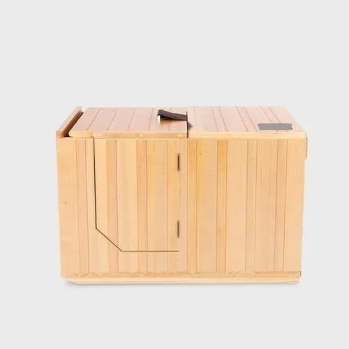
온열
물 없이 하반신을 따뜻하게 데워 몸의 순환을 돕고 긴장을 풀어 줍니다.
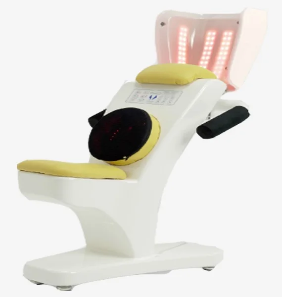
마사지
배를 부드럽게 자극해 장의 움직임을 돕습니다. 사고 후 더부룩함이나 소화불량이 있을 때 도움이 될 수 있습니다.
※ 사용하는 장비는 증상과 그날의 몸 상태에 따라 달라집니다.
BLOOD STASIS
어혈은 충격으로 몸 안에 생긴 멍처럼, 제대로 흐르지 못하고 고여 있는 혈액을 한의학에서 부르는 말입니다. 어혈이 풀리지 않고 남아 있으면 통증이 오래가거나, 몸이 무겁고 여기저기 쑤시는 느낌이 이어질 수 있습니다.
몸 안쪽에서
어혈을 풀어 주는 한약으로 몸 안쪽의 순환을 돕고 회복을 뒷받침합니다.
아픈 부위에서
막힌 부위의 순환을 도와 어혈로 인한 통증을 줄입니다.
피부 가까이에서
뭉친 부위를 당겨 고여 있는 순환을 풀어 줍니다.
CAUTION
※ 치료에 대한 반응과 회복 속도는 개인차가 있습니다.
FAQ
관절을 바로잡을 때 소리가 나거나 순간 뻐근할 수 있지만, 상태를 살피며 힘을 조절해 진행합니다. 느끼는 정도는 개인차가 있습니다.
일반 침은 혈자리를 자극하는 치료이고, 약침은 여기에 한약재에서 얻은 약침액을 통증 부위에 소량 넣어 약재의 작용을 함께 전하는 치료입니다.
꼭 그렇지는 않습니다. 통증이 넓게 퍼져 있거나 어혈이 많아 보일 때, 소화불량·불면처럼 몸 안의 증상이 함께 있을 때 권해 드립니다.
네. 한 번 내원하시면 물리치료와 ICT로 몸을 먼저 풀어 준 뒤 침·약침·뜸, 부항, 추나 순서로 함께 진행하고, 필요하면 한약을 처방합니다. 자세한 순서는 치료 과정에서 확인하실 수 있습니다.
네. 침·약침, 추나, 한약, 뜸·부항·물리치료요법 모두 자동차보험으로 받으실 수 있습니다. 치료 항목과 기간은 상태와 보험사 확인에 따라 달라질 수 있으며, 자세한 절차는 자동차보험 진료 안내에서 확인하실 수 있습니다.